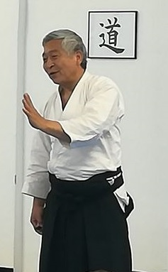

Artículos escritos por: Doshu Kenjiro Yoshigasaki

1.- ¿Que es Aikido?
En todo el mundo las personas acostumbraban pelear usando espadas, lanzas y otras armas, y cuando no tenian armas a mano, boxeaban o luchaban. Las técnicas de pelea fueron casi las mismas en todo el mundo hasta la invención de las armas de fuego. El uso de armas de fuego, cambió completamente la forma de pelear en la guerra. En Japón este tipo de armas fueron importadas por los Portugueses en 1543 y los Japoneses rápidamente comenzaron su propia fabricación. Alrededor de 1590 fueron usadas en la guerra y probaron ser mas eficientes que las armas tradicionales. Sin embargo, el uso de armas fué limitado por las condiciones de fabricación. Alrededor del año 1600 Japón fue dominado por el Clan Tokugawa, que tuvo éxito al crear un sistema de dominación a través de los samurais. Para estabilizar su dominación, prohibieron la producción y el uso de armas, asi como la comunicación con el mundo exterior. Esto dió la oportunidad de desarrollar métodos de pelea sin armas durante dos siglos y medio, mientras que en Europa las armas de fuego fueron desarrolladas como la principal arma de combate.
Desde el 1800, Europa comenzo a colonizar China. Los Europeos no estaban interesados en Japón, porque era demasiado pequeño comparado con China. Sin embargo los Estados Unidos también querían participar de la colonización de China. Alrededor de 1860 la armada de Estados Unidos fue a Japón y los forzó a darles un puerto como su territorio. Entonces, los países Europeos también querían usar el puerto, y así Japón estaba en peligro de ser colonizado como China. Japón, decidió crear un ejército fuerte para defenderse de Estados Unidos y de Europa, por eso se prohibió la espada y se creó un ejercito con armas de fuego.
Los clanes de Samurai que mantenían la tradición de las técnicas de espada estaban infelices y trataron de mantener la tradición. Una forma, era convertir las técnicas en deportes. Así, se creó el Judo, el Kendo y siguió el Karate. Aquellos tipos de deportes de artes marciales fueron sostenidos por estudiantes universitarios. Aquellos que no querían la forma deportiva llamaron a estas artes Kobudo o Jujitsu. Uno de los Jujitsu se llamó Daitoryu Jujitsu y esta fue la base técnica del Aikido. Es necesario saber que las técnicas de Judo vienen de artes marciales que no usaban espada y lo mismo fué con el Karate. Por eso es que las técnicas de Karate incluyen técnicas de palo, pero no de espada. El Kendo, se basó en tecnicas de espada pero se transformó en deporte. Daitoryu Jujitsu fué creado por alguien que le gustaba la espada y era bueno en estas técnicas. Él, desarrolló las técnicas sin armas, usando su habilidad en el uso de la espada. Esto es por lo que las técnicas de Daitoryu Jujitsu son muy diferentes de las técnicas de Judo o de Karate.
En realidad, las técnicas Daitoryu son muy similares a las de Kendo. Sin embargo, por la forma en que las técnicas son practicadas, las personas se olvidaron de la espada y piensan en la situación de pelea callejera en su sociedad. Después de la segunda guerra mundial, había una idea general que Japón no debía pelear y que la gente no tenía armas de fuego,ni espadas. La gente pensó en peleas callejeras sin armas, o tal vez con palo o cuchillo.Por eso, en aquella situación, nació el nuevo nombre de Aikido. La idea de Aikido era la de controlar la situación sin pelear. Esta mentalidad correspondió a la tendencia en Estados Unidos y Europa después de 1960 y el Aikido comenzo a ser sostenido filosóficamente. La idea de resolver conflictos sin pelear, devino parte de la filosofía del Aikido.
Luego, vino la idea de autodefensa. Que es autodefensa?. En realidad, no hay diferencia entre ataque y defensa. Cuando uno realiza una acción hacia otro, se lo llama ataque. Entonces, el otro hace lo mismo y a esto se lo llama defensa. Por eso la defensa se permite solo cuando uno es atacado. Si el ataque viene sin arma, es posible esperar hasta que el ataque venga y hacer algo con este. Pero si el ataque es hecho con armas de fuego y otras armas altamente desarrolladas, es casi imposible defenderse despues que el ataque comenzó. Esto significa que uno debe disparar antes que el otro me dispare.Entonces, apareció la cuestion de conocer la intención del otro. Si una persona tiene un arma en su mano, el policía duda de su intención, por eso le demanda que inmediatamente arroje el arma y que ponga ambas manos arriba. Pero, si está oscuro, que debe hacer el policia?. Puede ser que el policia esté obligado a disparar antes que sea posible para la otra persona dispararle a él. Entonces hay una pregunta, y es si el policía juzgó la situación correctamente o no. Si el ataque y la defensa sucede entre dos países, es más complicado. Primero un país es atacado, pero es difícil saber quién atacó. Entonces el país puede asumir que el ataque fue hecho por el país enemigo y comienza a atacarlo en nombre de la defensa. Entre dos seres humanos, a esto se lo llama venganza y esta prohibido por la ley. Sin embargo el gobierno puede castigar al criminal y por eso la víctima no tiene que tomar venganza. Entre dos países, no hay autoridad por encima de ellos, y por eso la venganza esta permitida. De nuevo, no es facil distinguir la venganza de la defensa. Todo el problema viene porque el acto del ataque, venganza y defensa son lo mismo. Es solo un asunto de interpretación.
En Aikido es posible crear una filosofía completamente nueva. Aikido no tiene que ser autodefensa. La defensa es lo mismo que el ataque. Aikido es un camino para crear situaciones en la que el ataque es dificil que suceda. Si el ataque no sucede, la defensa no es necesaria. Yo pienso que es el único camino para la paz.
Texto escrito por Doshu: Kenjiro Yoshigasaki. Traducido por Sensei: Norberto Kiman
2.- El Aikido desarrollado como arte.
Por lo que respecta al Aikido, la única alternativa para su futuro desarrollo será como arte. Las artes como la música, la danza la pintura, el teatro, la escritura, la poesía, etc., se originan en el mundo real pero crean una nueva realidad que no consiste en una copia del mundo real. Esta nueva realidad, plena de belleza y armonía, guía al mundo hacia su transformación en un mundo mejor. Por ello las artes son tan importantes para el ser humano.
El arte del Aikido consiste en desarrollar técnicas bellas y armoniosas que creen una nueva realidad a partir de una situación de peligros reales del mundo real. En el mismo sentido, es un arte de gran ayuda en la vida cotidiana, repleta de distintos peligros, lo cual significa que el Aikido es el arte de vivir.
Texto extraído del libro: Aikido arte del peligro, arte de vida. Autor: Kenjiro Yoshigasaki (Vol I, pag 7/8, Erga Edizioni 2012)
3.- Ki Aikido y Relación.
Uno comienza a aprender técnicas de Aikido con un atacante. Este es un muy buen modo de empezar, porque de esta manera la relación humana se vuelve tan importante como la técnica en si misma. Otras artes marciales, aprenden técnicas, sin importancia de la relación humana. Cuando uno solo quiere entrenar técnicas, se practica uno mismo o también con algo material. Hubo un gran campeon de Judo antes de la segunda guerra mundial en Japon, que practicaba técnicas de Judo contra un arbol. Muchos maestros chinos de Kung Fu practicaron sus técnicas contra una figura de madera o una tabla. Otra forma de práctica de técnicas sin relación humana, es practicar con un atacante que no reacciona para nada. De este modo el otro actuaría como si fuera un material. En deportes, a menudo se practican técnicas contra un par que se resiste, pero entonces otra vez no hay casi relación humana, cuando el otro resiste todo el tiempo.
Practicar técnicas sin relación humana, puede hacer que uno se comporte como un arma o como un robot. Inconcientemente uno piensa que una técnica de pelea se debería usar, como un hombre que usa un arma, o como el gobierno usa al ejército o al servicio secreto para ganar una guerra. Si uno aplica un arma (material) sobre la vida humana, este arma determina el destino de los seres humanos. Esto llevará a la destrucción de la humanidad y los seres vivientes. El camino de la práctica de Aikido mantiene a la humanidad como base del mundo.
Texto escrito por Doshu: Kenjiro Yoshigasaki. Traducido por Sensei: Norberto Kiman
4.- Kumiwaza.
La mayoría de las artes marciales o deportes comienzan por la práctica de técnicas por uno mismo. Si es difícil practicar solo, entonces uno utiliza una figura material como atacante. También se puede usar algo como una bola de boxeo o un maniquí. De este modo se trata a quien ataca como un material y no hay relación humana con él. Sin embargo, es imposible practicar técnicas de Aikido teniendo un atacante material. Aikido comienza desde el principio con la práctica de una pareja enfrentando la dificultad de la relación humana, aprendiendo a tratar con ella. Las técnicas de Aikido no están hechas para aplicar contra materiales sino que son una parte de las relaciones humanas en la vida real. Esto es llamado Kumiwaza. Kumi en Japonés significa pareja y waza significa técnicas. Por eso, el entrenamiento de Aikido comienza con Kumiwaza. Esto significa una práctica de dos seres humanos y su relación.
Texto escrito por Doshu: Kenjiro Yoshigasaki. Traducido por Sensei: Norberto Kiman
5.- Significado Real de Otomo.
Otomo es una tradición Japonesa para los maestros de artes marciales. Muy a menudo se la confunde con la de Uchideshi (discípulo privado) porque normalmente es uno de los Uchideshi el que realiza Otomo. Otomo es considerado normalmente como un método de entrenamiento para Uchideshi. Esto significa cuidar al maestro como un valet.
Sin embargo hay un significado mas profundo de la práctica de Otomo. Los maestros de artes marciales a menudo se han iluminado en meditación. Ilumninarse significa que uno deviene conciente de su mundo interior, y entiende que ver el mundo interior de uno mismo es el único camino para desarrollar la vida desde la verdad. Algunos bailarines, pintores, actores, músicos y practicantes de meditación lograron ese estado. Esto brinda tal condición de bienestar que uno no desea ninguna amistad o socialización. Uno solo disfruta de su tarea de realización del arte o de su enseñanza, junto a las actividades básicas de la vida tales como alimentarse, beber, el sexo, tomar una caminata, etc. Esto puede crear un malentendido con otras personas por la falta de amistad, o vida social, las cuales pueden considerarlo como frialdad o mala educación. Por tal motivo un maestro necesita un Otomo, una persona que pueda hacer de puente entre el maestro y otra gente.
Un maestro no está interesado en la conversación social, pero está listo para enseñar o responder preguntas. La presencia de un Otomo previene de la conversación y al mismo tiempo dá la posibilidad de hacer preguntas. En las cenas por ejemplo, se continúa con la conversación social por una o dos horas. El Otomo puede hacerse cargo de la casa del maestro sin molestar a la gente que disfruta de la conversación.
Naturalmente el Otomo, puede practicar meditación en la vida diaria, mientras el/ella está con el maestro. No es importante si uno está iluminado o no, porque nadie sabe porqué sucede la iluminación, ni como iluminar a otros. Lo importante es entender la vida después de la iluminación. Los filósofos y artistas llegan a un modo de vida el cual está en la dirección de la vida después de la iluminación. Eso muestra que ese tipo de resultado en la vida es el natural para el desarrollo humano. En esto radica el valor de la iluminación y la meditación.
Texto escrito por Doshu: Kenjiro Yoshigasaki. Traducido por Sensei: Norberto Kiman
6.- Del “Como hacer” al “Que hacer” y del “Hacer” al “Ser”.
La ciencia moderna se basa en la filosofía del “Como hacer”. Los científicos no dicen que hacer sino solo como hacer algo. Esta filosofía también influencia a las personas de los países industrializados y por eso dejan de preguntarse lo que deberían hacer y solo se preguntan como hacer lo que ellos quieren. Este tipo de filosofía, no es muy buena ni para la vida ni para el mundo porque entonces la gente hace cosas tontas y crea mas problemas en sus vidas y también en el mundo.
Sin embargo, cuando uno realmente comienza a pensar que es lo que uno debería hacer, a menudo uno no encuentra nada extraordinario, solo se encuentra con las necesidades diarias; por eso uno pasa de pensar acerca de “cómo hacer” a “hacer lo que uno quiere”. Aquí uno está de nuevo usando la lógica material; en este tipo de lógica uno debe encontrar un objetivo tan grande y tan lejano en el futuro como sea posible, y luego hacer un esfuerzo para lograrlo. Pero la vida no es así.
Uno solo tiene que saber “que debo hacer hoy”, no es necesario saber que hacer mañana. Por eso, si se hace lo que se debe hacer cada día, uno logrará una gran vida al final. Esta es la lógica de la vida. Saber que hacer hoy, no significa que uno deba olvidarse del mañana. Uno debe imaginar lo que sucederá mañana. Es bueno imaginar lo que pasará después que uno muera. Uno debería tener mucha imaginación acerca del futuro y de todos modos no tiene por que saber lo que tiene que hacer mañana. Uno solo tiene que saber que hacer en este momento.
Es necesario recordar que la mayoría de las personas en el mundo están ocupadas haciendo lo que deben hacer en sus vidas cotidianas, esto fue así hasta hace unos cien años, aún en países industrializados. En estos días podemos vivir en forma bastante confortable sin trabajar demasiado pero esto es solo porque usamos el petróleo y el gas. Sin estos elementos, cada uno debería trabajar mucho mas duro para realizar sus tareas cotidianas. Aún la gente pobre en Europa está viviendo con mas confort que los reyes y reinas del siglo XVIII.
Como no tenemos que trabajar tanto ya que contamos con el gas y la electricidad (lo cual hace la mayoría del trabajo), por eso tenemos mucho tiempo libre y cuando uno no tiene nada que “Hacer”, uno debe comenzar a “Ser”: mantener una buena postura física con una respiración calma y hacer meditación. Luego, mantener esta meditación mientras uno hace lo que es necesario en la vida cotidiana, así uno comienza a encontrar lo que debe hacer en su vida. El punto importante es que el “Ser” crea el “Hacer”, y así es como funciona la vida. Estar en una buena postura crea lo que uno debe hacer en la vida. En la ciencia de la materia en cambio, el “Hacer” crea al “Ser”, o sea que uno hace algo para crear un logro material.
Texto escrito por Doshu: Kenjiro Yoshigasaki. Traducido por Sensei: Norberto Kiman
7.- Significado de la Palabra Sensei.
En Japón, a alguien que dicta clases sobre cualquier tema se lo llama Sensei. Un maestro de jardín de infantes muy joven puede ser llamado Sensei por un padre de un alumno que lo dobla en edad, porque el padre aprecia el hecho de que el joven maestro eduque a su hijo. Es similar a usar Sr., Sra., o Sta., simplemente indica respeto hacia la persona. En Japón un abogado o un doctor normalmente son llamados Sensei, porque se supone que ellos saben más que otros. A partir de que los abogados a menudo se vuelven políticos, también a ellos se los llama frecuentemente Sensei. Es cierto que en Japón la palabra Sensei es a veces de uso abusivo. Sin embargo, en general, a un maestro Japonés normalmente se lo llama de ese modo.
Esta también la pregunta de que lo hace a uno un Sensei. Cuando uno educa, uno es un Sensei, pero uno puede no serlo, si uno no esta dando clases. Esto depende de su materia. Si uno dicta clases de técnicas de Aikido, uno es un maestro solo en el tatami y si esto es por pocas horas, es inconveniente estar cambiando de un titulo a otro dentro y fuera del tatami. Las personas a las que se las llama Sensei, se supone que se comportan como un maestro también en su vida diaria. De esta forma, se puede continuar refiriéndose a ellos como Sensei, sin la necesidad de cambiar de titulo.
Esto crea una nueva pregunta: como debe comportarse un maestro en su vida diaria?. El Budismo Zen, comienza con la idea de entender la vida. Esto sugiere que cuando uno entiende la vida, se siente como si uno hubiera nacido nuevamente. Sen significa antes y Sei significa nacido. Por eso Sensei significa literalmente, una persona que nacio antes. Este nacimiento es espiritual y no físico. El significado original de Sensei es: alguien que nació espiritualmente antes que otros. Si uno se fija en el significado original, solo aquellos que entienden la vida y se comportan como un maestro las 24 horas del día, aun en su vida diaria, ellos deben ser llamados Sensei.
El respeto suele ser muy importante para las personas en todo el mundo. Uno debería respetar a los seres humanos, animales, arboles, etc. En otras palabras, solo la vida y las cosas vivientes deberían ser respetadas. Uno no debe respetar los materiales. Aun en el caso de máquinas de alta tecnología como los autos Ferrari o grandes trabajos de arte. No son los objetos los que deben ser respetados sino los seres humanos que están detrás de la creación de ellos. Uno respeta la vida, porque cada vida esta relacionada a otras vidas, y estos millones y billones de relaciones, crean y mantienen la vida en la tierra. El respeto crea mejores relaciones entre las vidas, y eso es porque el respeto era y es una de las cosas mas importantes en la vida. Respeto en realidad significa no perturbar las relaciones entre las diferentes vidas.
Cuando el respeto fue demostrado, se lo llama honor. Las personas acostumbraban estar listas para morir por honor, porque las relaciones entre las vidas eran esenciales para la supervivencia de los seres humanos. En estos días, ambos, respeto y honor, estan casi olvidados porque hemos desarrollado una civilización basada en armas y en lo material. La supervivencia depende de las armas y la política y no mas en las relaciones entre las diferentes vidas.
Aikido es un camino (Do) y el camino debe ser mantenido en la práctica del Aikido. A la persona que resguarda el camino se la llama Doshu. Hay dos significados diferentes de Doshu en Japons. El primero significa "maestro del camino o vía" y el segundo significa "custodio del camino o vía". La diferencia es que puede haber solo un maestro de la vía pero muchos custodios de la vía. El maestro superior de cualquier organización de Aikido debería ser llamado Doshu - custodio de la vía - pero en realidad muchas organizaciones de Aikido no tienen un Doshu. Esto es, porque la mayoría de los maestros japoneses siguen los preceptos de algun otro maestro, en especial de Morihei Ueshiba, aunque el este muerto. Tambien hay maestros, que no siguen a alguien en particular, pero en su lugar, siguen alguna filosofía establecida. Ellos tampoco son custodios de la vía. Por eso es que no hay muchos Doshu en el mundo de Aikido. Un maestro es Doshu solo cuando el muestra la vía en forma completamente independiente de cualquier filosofía u otros maestros incluidos los fallecidos.
Texto escrito por Doshu: Kenjiro Yoshigasaki. Traducido por Sensei: Norberto Kiman
8.- ¿Que es la felicidad ?
¿Sabemos que es la felicidad? Quizá pensemos que la felicidad es un sentimiento -de hecho mucha gente habla de sentimientos de felicidad-; sin embargo mientras pensemos que la felicidad es un sentimiento nunca podremos ser siempre felices. Hay que entender que la felicidad no es un sentimiento. Lo cierto es que la mayoría no es feliz y que desea olvidarse de su infelicidad. De la misma forma que se suele beber para olvidar la desgracia, se tiende a buscar los buenos sentimientos para olvidar la infelicidad, pues mientras dure ese sentimiento tan agradable y especial, uno se puede olvidar de su infelicidad. Erróneamente, se piensa que este sentimiento es la felicidad y que en cuanto se acabe el sentimiento habrá que volverse a enfrentar a la propia infelicidad. Entonces se inicia de nuevo la búsqueda del sentimiento felíz para olvidar la infelicidad. Dicho proceso es exactamente igual que la adicción alcohólica. Mientras se está bebiendo se olvida la infelicidad. Cuando se está sobrio hay que enfrentarse de nuevo a ella por lo que se busca el alcohol.
La auténtica felicidad es eterna Si la felicidad no es eterna es que no es real, por ello la felicidad no es un sentimiento. Los sentimientos por su propia naturaleza, cambian; no son eternos. La auténtica felicidad es eterna y no es un sentimiento; lo único que se puede hacer con ella es no perturbarla. A no perturbar la felicidad se lo llama calma. Si poseemos una joya preciosa no queremos que se quiebre y la tratamos con calma y delicadeza. De la misma manera tenemos que tratarnos a nosotros mismos con cuidado, lo cual crea calma y tranquilidad. Eso es calma en la vida.
La búsqueda de la felicidad comienza por enfrentarse a la propia infelicidad, lo cual es difícil por cuanto mucha gente tiene la costumbre de evitar la infelicidad haciendo o sintiendo algo. Es lo que muestra el dicho "No te preocupes. Sé feliz.".Es un error muy popular en el mundo industrializado. Si uno se sienta tranquilamente y se adentra en sí mismo, puede que encuentre mucha infelicidad. Pero no hay que huir de ella. Hay que plantarle cara. Cuando le plantamos cara a nuestra propia infelicidad, nuestro cuerpo sufre, por ello no se puede hacer nada más mientras uno se enfrenta a su propia infelicidad. Primero se puede hacer en la cama, pero luego hay que intentarlo estando despierto y luego mientras se estén haciendo otras cosas: será meditación en la vida cotidiana. El cuerpo se fortalecerá y estaremos en condiciones de enfrentarnos sin problemas a nuestra infelicidad. Y cuando nos enfrentemos a ella, desaparecerá. Y cuando la infelicidad desaparezca, contemplaremos el estado auténtico de un ser humano. Eso es la felicidad.
Texto extraído del libro: El viaje interno de un extraño, caminos hacia una nueva percepción. Autor: Kenjiro Yoshigasaki (Pag 66/67/68, Ediciones La liebre de Marzo - Abril 2003)
9.- ¿Que es la libertad ?
La gente suele pensar que la libertad significa hacer lo que se quiere sin ser controlado o influenciado por el otro. Este concepto es erróneo, ya que significa que no existe la libertad. Todo el mundo puede entender que es imposible hacer siempre lo que se quiere.
La libertad real es estar libre de los propios pensamientos, sentimientos y deseos. Esto es posible, y si todos fueran libres el mundo sería un paraíso.
10.- Acerca de limpiar.
Limpiar es una de las más importantes tradiciones de la cultura Japonesa. En Europa, la gente rica tenía sirvientes para limpiar, y por eso al limpiar se lo considera una tarea de bajo nivel social. Yo noté, que algunos Europeos se rehúsan a limpiar porque para ellos es una tarea humillante. No les importa cocinar o reparar cosas, pero no quieren limpiar.
El clima de Europa es básicamente cálido y seco en verano y frío y húmedo en invierno. Este clima no es muy favorable para las bacterias, por eso limpiar no era tan importante para la salud. Esto es por lo que el propósito de limpiar en Europa, es hacer que las cosas se vean bien o sea más agradables. El clima Japonés es básicamente cálido y húmedo en verano y frío y seco en invierno. Este clima es muy bueno para las bacterias y los pequeños insectos se desarrollan en verano y aún en invierno, los virus y los cuerpos muertos de las bacterias y pequeños insectos pueden causar problemas. Por eso, el propósito de limpiar en Japón era crear un buen ambiente para la salud y por ello los Japoneses, incluyendo a la gente pobre, tenían que limpiar.
La diferencia en cuanto al propósito también creó un método diferente de limpiar. En la tradición espiritual de la cultura japonesa, limpiar dentro de uno mismo se lo llama MISOGI y este es uno de los propósitos principales de la meditación. Esto corresponde a la psicoterapia Europea, pero con diferente teoría y métodos. Hay muchos caminos de MISOGI pero uno de ellos es limpiar la casa o el dojo a mano. Es muy importante limpiar a mano con una tela húmeda y son varias las razones para esto.
Hay una idea común que Europa creó el dualismo. Dualismo significa si/no, bueno/malo, mas/menos, positivo/negativo, etc. Casi todos los Japoneses piensan que este dualismo puede causar conflicto dentro y fuera de uno mismo y ellos tratan de encontrar una solución a través de la unificación. La idea típica es “El universo absoluto es uno, luego dos fuerzas opuestas crearon el mundo relativo del dualismo”. Esto muestra el error típico de la mayor parte de la filosofía Japonesa y China. Este error es muy profundo y debe ser señalado y corregido. Es verdad que el dualismo causa conflicto innecesario y malos entendidos, pero la solución no es la unificación. El dualismo se basa en el sistema de coordenadas cartesianas. Si uno traza una línea recta y pone un punto sobre la línea, uno llama al lado derecho mas y al lado izquierdo menos, esta es la expresión básica del dualismo. Luego +1-1=0 y –(-1)=+1 y esta lógica está dentro de nuestro lenguaje. No bueno significa malo, no malo significa bueno. Este es el problema del dualismo. En el mundo real hay tres categorías: malo, no malo y no bueno y bueno. Eso es por lo que no malo, no significa bueno en el mundo real. No bueno tampoco significa malo. Uno puede ver que nuestro lenguaje, ya está basado en el dualismo.
Hay una idea acerca de la higiene la cual apunta a escapar de cosas que son malas para la salud. Esta idea de higiene, está también basada en el dualismo. Se piensa que se puede crear un buen ambiente liberándose de cosas malas, con lo cual se está utilizando la lógica de no malo significa bueno. Seguramente es importante liberarse de cosas malas, pero eso no es suficiente. Nosotros tenemos que crear un buen ambiente.
La vida es básicamente química. Hay que notar que la ciencia primero se desarrolló con la química. Solo después de Newton la física devino en la base de la ciencia moderna. En estos días la química también se basa en la física. Sin embargo la química real es independiente de la física. Es un gran error de la ciencia moderna, que todas las cosas deban ser justificadas por la física.
La química se basa en Iones. La mayoría de la vida se basa en Iones de agua. El agua se ioniza muy fácilmente y eso es por lo que el agua es la base de la vida. 2H2O deviene en H3O+ y OH-. Cuando hay muchos iones de agua en el aire, esto promueve la buena salud. Por eso, la forma básica de crear un buen ambiente, es crear mas iones de agua. La correcta humedad es importante para la formación de Iones de agua. Si el aire esta demasiado seco, hay menos iones de agua. Si el aire esta demasiado húmedo, las partículas de agua en el aire crean una gran bola y por eso hay menos área de superficie en contacto con el aire, resultando en menos iones. La mejor humedad, esta entre el 50% y el 70%.
El segundo factor, es el material que se utiliza dentro de la casa. Los materiales que permiten al agua entrar y salir, son la madera y el yeso. Estos dos materiales fueron usados para las casas en todo el mundo. Cuando la humedad es alta, estos absorben el agua y cuando el aire es seco, estos dan agua al aire. Cuando la madera y el yeso le dan agua a aire, también crean iones de agua. Esto es, por lo que la madera y el yeso, son muy buenos para la salud. El plástico, a menudo da un vapor químico, que es malo para la salud. El metal, casi no da vapor químico, por eso el metal es no malo, pero no es bueno tampoco.
El tercer factor es el viento. Cuando hay suficiente humedad en el aire, el viento puede romper las partículas de agua y por lo tanto crear iones. Esto es por lo que el viento es agradable, cuando la humedad es alta.
El cuarto factor es limpiar con un trapo húmedo a mano. La fricción de una tela húmeda sobre cualquier material, crea iones. Es importante que el trapo no esté demasiado húmedo. Hay que apretar fuerte el trapo, para sacar cualquier extra de agua de él. Luego, es importante limpiar la superficie con suficiente fuerza, para romper las partículas de agua.
La forma normal Europea de usar un palo largo con un trapo húmedo para limpiar es inútil, porque el trapo está demasiado húmedo y no hay suficiente fricción. Muy a menudo, se tiene que usar un producto químico para sacar la suciedad y ese producto químico es a menudo malo para la salud. Esto es por lo que se tiene que usar solo agua y limpiar vigorosamente con las manos. Hay que usar ambas manos para sacar el agua extra del trapo. Esta es la forma tradicional Japonesa y es casi correcta científicamente. Es verdad que el clima Europeo es mas agradable y que esta forma Japonesa de limpiar no es absolutamente necesaria. Aun así, es siempre mejor crear un buen ambiente para la salud.
Limpiar a mano también da una oportunidad para la meditación y esto es MISOGI.
Texto escrito por Doshu: Kenjiro Yoshigasaki. Traducido por Sensei: Norberto Kiman
Artículos

Bibliografía

Mirá videos de la práctica